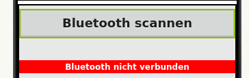
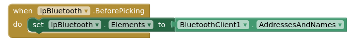
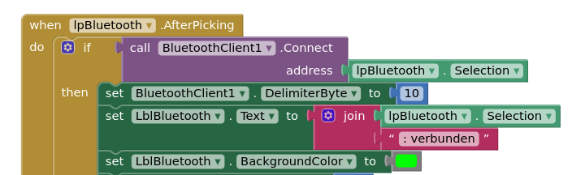
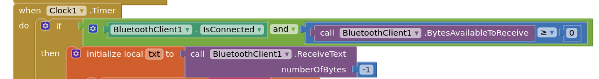

Über die Internet-Plattform MIT App Inventor kannst du relativ einfach Bluetooth-Apps für dein Handy entwickeln. Auf dieser Seite musst du dich unter Angabe einer E-Mail-Adresse und eines Passworts registrieren.
Mit der Handy-App MIT AI Companion Android IOS können die Apps auf dem Handy installiert werden.
Die genaue Beschreibung findest du hier: https://appinventor.mit.edu/explore/ai2/setup-device-wifi
Unter https://appinventor.mit.edu/explore/ai2/beginner-videos findest du eine Menge Tutorials, die dich schrittweise mit der AppInventor vertraut machen.
Um Bluetooth-Daten vom ESP32 auf dem Handy zu empfangen, benötigst du ein unsichtbares Element Bluetooth-Client aus dem Bereich Connectivity. Ziehe das Element auf den Handybildschirm in der Mitte.
Außerdem benötigst du einen Listpicker aus dem User Interface:

Bevor der Listpicker angeklickt wird, wird die Liste mit allen verfügbaren Bluetooth-Geräten gefüllt:

Nachdem der Listpicker geschlossen wurde, wird die Verbindung zum Bluetoot-Gerät aufgebaut:

Um regelmäßig die eingehenden Bluetooth-Daten zu prüfen, brauchst du noch eine Komponente Clock aus dem Bereich Sensors. Das Zeitintervall wird auf 200ms gesetzt, d.h. 5 mal pro Sekunde wird geprüft, ob neue Nachrichten vorliegen.
Mit diesem Code-Block werden die Nachrichten eingelesen:

Die Daten werden in einer lokalen Variable txt gespeichert und können jetzt dargestellt werden.
Auf dieser Seite findest du eine gute Anleitung zum Senden von Daten vom App Inventor an den ESP:
https://community.appinventor.mit.edu/t/bluetooth-hc-06-arduino-send-receive-send-text-file-multitouch-image/9518/2